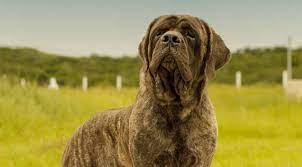

Sabe usar todo seu tamanho na hora certa! Todo tamanho do Mastiff impressiona, mas, por trás de toda grandeza, está um cachorro dócil, que precisa de muita atenção e carinho. Se os tutores precisarem de alguém para protegê-los, esses cães não hesitarão em ajudá-los. Toda a tranquilidade que eles esbanjam pode desaparecer em segundos se notarem uma briga em casa ou até mesmo que alguém que amam corre perigo. O Mastife, ou Mastim inglês, sabe usar seu grande tamanho nos momentos em que precisa ser respeitado!
O cachorro Mastiff é realmente muito grande. Se ficar de pé, pode ter o tamanho de uma pessoa adulta. Mas isso não significa que ele não possa viver em apartamentos. Por não necessitarem muito de exercícios físicos diários, eles podem morar tranquilamente dentro de casa. Passeios e pequenas caminhadas são o suficiente para exercitar o Mastiff sem que ele se sinta cansado.
O Mastiff gosta de crianças, mas não é indicado para ficar próximos a bebês por conta do seu tamanho gigante. Socializá-lo desde cedo com outros pets é importante para que ele se acostume e não estranhe a presença de outros animais em seu território. Da mesma forma, é importante apresentá-lo a muitas pessoas novas e lugares diferentes. Em geral, eles são indiferentes com pessoas estranhas, mas caso ache que é uma ameaça para o tutor, podem assustar. Por isso, o treinamento desde filhote faz diferença.
Fizemos um gráfico nivelando de 0 a 5 as características da raça, veja a baixo!
O Mastiff cachorro é considerado de porte gigante, podendo ter até 70 cm de altura, e é muito poderoso e musculoso. Seu corpo é bem distribuído, com membros fortes. Em geral, as fêmeas são um pouco menores que os machos. Sua pelagem é curta e densa, sendo mais áspera no ombro e pescoço. O rosto tem uma expressão séria, o focinho é curto, os olhos são bem separados e, em geral, de cor preta. As orelhas são proporcionais ao tamanho da cabeça — nem grandes, nem pequenas — e, assim como o resto, pretas.
Os banhos para Mastiffs não precisam ser frequentes e podem ser ajustados conforme a sujeira do cão. Panos molhados podem ser usados semanalmente para higiene, especialmente para limpar rugas faciais e orelhas. Os problemas de saúde, muitas vezes genéticos, incluem displasia de quadril, questões oftalmológicas e cardíacas. Monitorar regularmente a saúde da pele, patas e a ocorrência de constipação intestinal é essencial. Manter uma rotina de visitas ao veterinário é importante para garantir o bem-estar do Mastiff, evitando também problemas como sobrepeso devido à menor prática de exercícios.